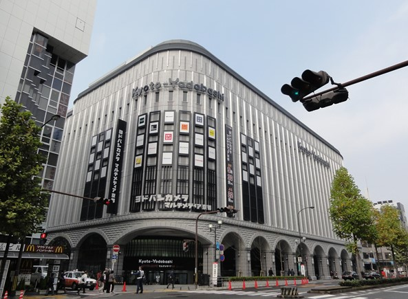
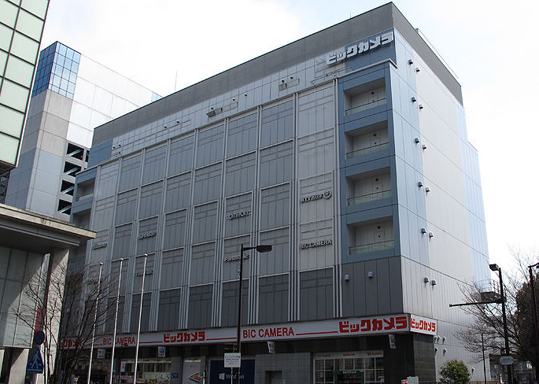

Yodobashi Camera is located on Kyoto Yodobashi (large department store in north of Kyoto Tower). It's from the first basement level(B1) up to 3rd floor, the stores sell all kinds of electronic goods at reasonable prices. On the 1st floor you can find a lot of companies' booths provide home and mobile internet.
Yodobashi Camera Website Yodobashi Camera
Open:
All week days from 9:30 am to 10 pm.
Address:
Kyoutoekimae Kyoutotawa-yoko, Shimogyo-ku Kyoto-shi,Kyoto, 600-8216, Japan *Itinerary*
Bic Camera is an extremely popular chain of consumer electronics stores. The Kyoto branch of this store is very convenient as it sits right next to the Kyoto Station building and also the near to Yodobashi Camera. So, you can visite both of them and take a look all all companies's booths.
The 1st floor is dedicated to mobile phones and smartphones. In this floor there is also companies's booths. So, you can get a lot of information about offers and costs.
Open:
365 days a year from 9:30 am to 9 pm.
Address:
927 Higashishiokojicho, Shimogyo Ward, Kyoto, 600-8216 *Itinerary*
There are also many agents for each company where you can find informations about offers and costs, but in this case you only get informations about one company. In addition, when you sign an Internet contract in a department store like those mentioned above, you get purchase coupon that go up to 35000 yen.